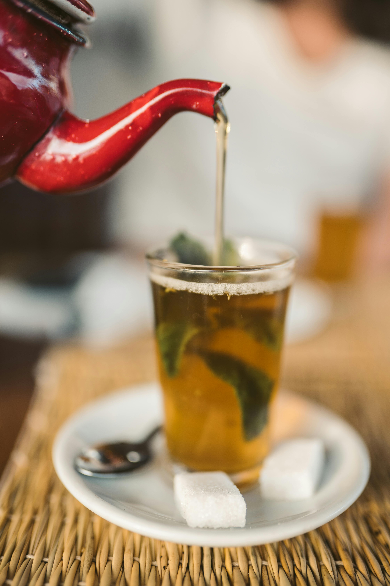

WANDER WOMEN
WANDER WOMEN
ESSAOUIRA Guide
Hippie hangout
Top Tourist Spots
Essaouira, a UNESCO World Heritage city, is renowned for its rich history, beautiful beaches, and stunning architecture, offering a perfect blend of culture and relaxation.
Essaouira Beach
Essaouira Beach is a serene stretch of coastline perfect for relaxation, watersports, and enjoying a peaceful sunset. Its clean sands and gentle waves make it ideal for both locals and tourists.
Skala du Por
Skala du Port is a historic fortress that offers breathtaking views of the Atlantic Ocean and Essaouira's old medina. This well-preserved site once protected the city’s port and is a must-see for its impressive architecture.
Place Moulay Hassan
Place Moulay Hassan is a vibrant square at the heart of Essaouira, offering a mix of lively markets, street performers, and cafes. It's the perfect spot to enjoy local food and watch the hustle and bustle of city life.
Le Souk Essaouira
The souk of Essaouira is a bustling marketplace where visitors can explore a variety of local goods such as spices, textiles, and handmade jewelry. It’s an excellent place to immerse yourself in the vibrant culture of the city.
Cultural Encounters
Delve into Marrakesh's rich heritage by exploring its bustling souks and experiencing the Berber culture that permeates the city.
Language
Arabic and Berber are Morocco's official languages, with French widely spoken in urban areas. In Essaouira, the local dialect, known as "Darija," incorporates elements from Arabic, Berber, French, and Portuguese, reflecting the city's diverse history.
Music
Essaouira is renowned for its vibrant music scene, notably the Gnaoua music, which blends African, Arab, and Berber influences. The annual Gnaoua World Music Festival attracts artists and enthusiasts from around the globe, offering performances that resonate with rich rhythms and melodies.
Climate
Essaouira enjoys a mild, Mediterranean climate, moderated by its coastal location. The city experiences moderate temperatures year-round, with cool, wet winters and warm, dry summers, making it an ideal destination for comfortable exploration at any time.
Clothing Styles
Traditional attire in Essaouira includes the "djellaba" and "kaftan," long, loose-fitting garments suitable for the coastal climate. These garments are often made from light fabrics and come in various colors, reflecting the city's vibrant culture.
Berber People
The Berbers, or Amazigh, are Morocco's indigenous inhabitants, known for their unique language, traditions, and crafts. In Essaouira, the Berber community contributes significantly to the city's cultural diversity, evident in their art, music, and daily life.
Argan Oil
Produced primarily by women's cooperatives in southwestern Morocco, argan oil is prized for its cosmetic and culinary uses. In Essaouira, visitors can explore local markets and cooperatives to learn about the traditional extraction process and purchase authentic argan products.
Architecture
Essaouira's architecture showcases a blend of Arab, Berber, and European influences. The city's medina, a UNESCO World Heritage site, features narrow alleys, whitewashed buildings with blue shutters, and historic sites like the Skala de la Ville, reflecting its rich history and strategic coastal position.
Respecting Prayer Times
In Morocco, the call to prayer (adhan) resonates from mosques five times daily, marking significant moments for reflection and community gathering. These prayer times are integral to Moroccan life and culture. Being mindful of prayer times not only shows respect for local customs but also enriches your cultural experience in Morocco.
Gastronomic Delights
Essaouira's culinary scene delights the senses by harmoniously blending traditional Moroccan flavors with fresh coastal influences, resulting in a diverse array of delectable dishes. *All can be veganized or vegetarianized*
To Eat
- Seafood Tagine:
A slow-cooked stew prepared in a traditional conical pot, combining fresh seafood with a blend of spices, dried fruits, and nuts, offering a rich and aromatic flavor profile.
- Couscous with Fish:
Made from steamed semolina wheat granules, couscous is served with a hearty fish stew, reflecting Essaouira's coastal heritage.
- Moroccan Salads:
Diverse salads ranging from fresh tomato and cucumber to cooked dishes like caramelized carrots and roasted peppers, typically seasoned with herbs and spices, and served as appetizers or side dishes.
- Grilled Sardines:
Fresh sardines grilled to perfection, often enjoyed at the port's seafood stalls, embodying the city's fishing tradition.
- Fresh Orange Juice:
Squeezed from local citrus, this refreshing drink is widely available, especially near the port and souks.
- Mint Tea:

Known as "Moroccan whisky," this sweet green tea infused with fresh mint is a symbol of hospitality, traditionally served to guests in ornate glasses.
Restaurants
- Zaytoune Restaurant
Where to Stay
Staying in a riad offers an authentic experience of Marrakesh's unique architecture and hospitality, providing a tranquil retreat amidst the city's vibrant life.
Hôtel Cap Sim
Located just a stone's throw from the beach in the heart of the medina, Hôtel Cap Sim offers clean and comfortable rooms. Guests can enjoy a rooftop terrace with panoramic views of the city.
Riad Chbanate
Situated in the medina, Riad Chbanate combines traditional Moroccan design with modern comforts. It features a rooftop terrace, an indoor pool, and elegantly decorated rooms.
Villa Quieta
Located near Essaouira Beach, Villa Quieta offers a serene environment with lush gardens, an outdoor pool, and comfortable rooms with private balconies overlooking the ocean.
Souvenir Ideas
Things to remember Essaouira by:
Thuya Wood Crafts
Essaouira is renowned for its Thuya wood craftsmanship. Artisans create various items such as jewelry boxes, chess sets, bowls, and tables, often inlaid with materials like bone, mother-of-pearl, or other woods. The wood's distinctive reddish-brown hue and pleasant aroma make these pieces unique souvenirs.
Argan Oil Products
Argan oil, endemic to the region around Essaouira, is used in both culinary and cosmetic products. Visitors can purchase pure argan oil or products infused with it, such as soaps, lotions, and culinary delights. Ensure authenticity by buying from reputable sources.
Handcrafted Ceramics
Essaouira's markets offer a variety of handcrafted ceramics, including plates, bowls, and decorative items. These pieces often feature traditional Moroccan designs and vibrant colors, making them excellent souvenirs.
Local Artwork
The city's artistic heritage is reflected in the numerous galleries and street vendors showcasing paintings and artworks. These pieces capture the essence of Essaouira's landscapes, culture, and daily life, providing a lasting memory of your visit.
Spices and Dry Goods
The markets are filled with aromatic spices like saffron, cumin, and paprika. Purchasing these spices allows you to bring home a literal taste of Morocco.
Staying Safe
To do:
1: Have Fun
2: Stay Safe
Modest Dress
While Essaouira is known for its relaxed atmosphere, it's respectful to dress modestly, especially in public areas. Women are advised to cover shoulders, chests, and knees. Opt for lightweight, loose-fitting clothing such as long skirts, maxi dresses, or linen trousers paired with long-sleeved tops. This attire helps you blend in with the local community and shows cultural sensitivity.
Awareness of Scams
As in many tourist destinations, be vigilant about potential scams. Common tactics include unsolicited assistance followed by demands for payment, or offers of services that result in unexpected charges. Always agree on prices beforehand and be cautious of "free" services that may come with hidden fees.
Food and Water Safety
To avoid foodborne illnesses, dine at reputable establishments where food is prepared hygienically. It's advisable to drink bottled water and avoid ice cubes, as tap water quality can vary.
Verify Prices Before Paying
Always confirm the price of goods and services before accepting them. In markets (souks), haggling is customary, but ensure you agree on a final price before the transaction. For taxis, it's best to agree on the fare before starting your journey or ensure the meter is used. This practice helps prevent misunderstandings and ensures fair transactions.
Tipping Etiquette
Tipping is customary in Morocco, but it's important to offer tips directly to the person providing the service. Be cautious of individuals who expect tips for unsolicited services or assistance. Being aware of any hidden fees added to bills can also help in managing expenses.
Marijuana in Essaouira
While marijuana is illegal in Morocco, it is known that the Rif Mountains in northern Morocco, which include areas not far from Essaouira, are a significant producer of cannabis. However, marijuana use is not openly tolerated in public spaces, and visitors should be cautious. It is important to respect local laws and customs. Possession and use of marijuana can result in serious legal consequences. Always stay informed about local regulations and exercise caution during your visit to Essaouira.
Stay Informed and Prepared
- Know Emergency Contacts: Keep a list of emergency contacts, including local authorities and your country's embassy or consulate.
- Trust Your Instincts: If a situation or area feels uncomfortable, trust your instincts and remove yourself from it. Prioritize your safety at all times.
Embassy and Contact Information
- Address: 8, Boulevard Moulay Youssef, Casablanca, Morocco
- Phone: +212 522 642 099
- Emergency After-Hours Phone: +212 661 13 19 39
- Fax: +212 522 29 77 01
- Email: acscasablanca@state.gov
- Website: U.S. Embassy Rabat
- More Info Before You Go
Language
English, French, Arabic, or Amazigh
Practice
- As-salaam alaykum: Peace be upon you; a common greeting.
- Shukran: Thank you.
- La shukran: No thank you.
- Ma'a as-salama: Goodbye.
- Afak: Please.
- Duolingo: A free app to learn Arabic with interactive lessons. [Learn Arabic on Duolingo](https://www.duolingo.com/course/ar/en/Learn-Arabic)
- Rosetta Stone: Offers comprehensive Arabic courses with immersive learning methods. [Learn Arabic with Rosetta Stone](https://www.rosettastone.com/learn-arabic/)
- Al Jazeera Learning Arabic: A free open educational source presenting the Arabic language interactively. [Learn Arabic with Al Jazeera](https://learning.aljazeera.net/en)
- HelloTalk: An app that lets you chat with native Arabic speakers to enhance your learning. [Learn Arabic with HelloTalk](https://www.hellotalk.com/)
- StoryLearning: Offers guides to essential Moroccan Arabic phrases to get you speaking with confidence. [Learn Moroccan Arabic Phrases](https://storylearning.com/learn/arabic/arabic-tips/moroccan-arabic-phrases)
Language Learning Resources: